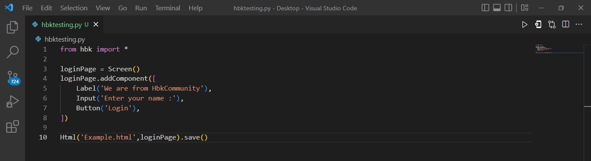
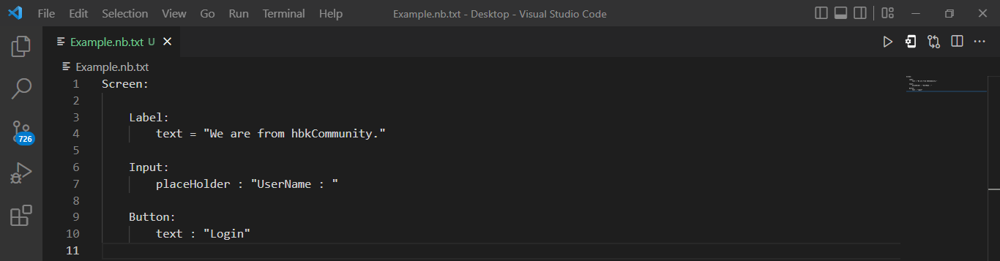

Hypertext bilang kit (hbk) is a python front-end web framework. hbk aims to provide a first class experience for front-end developers by the builtin components. Even you can build websites without the knowledge of html , css and javascript.
the first line tells python to import hbk next the second line create a blank screen called 'loginpage'. and the third line adds the components to the screen and the last line creates a html and css.
Future hbk
hbk may be available as a programming language called 'newbi' in the upcoming future. so that it makes the front-end development more easier.The following exmaple may give you an overview of newbi. Example 